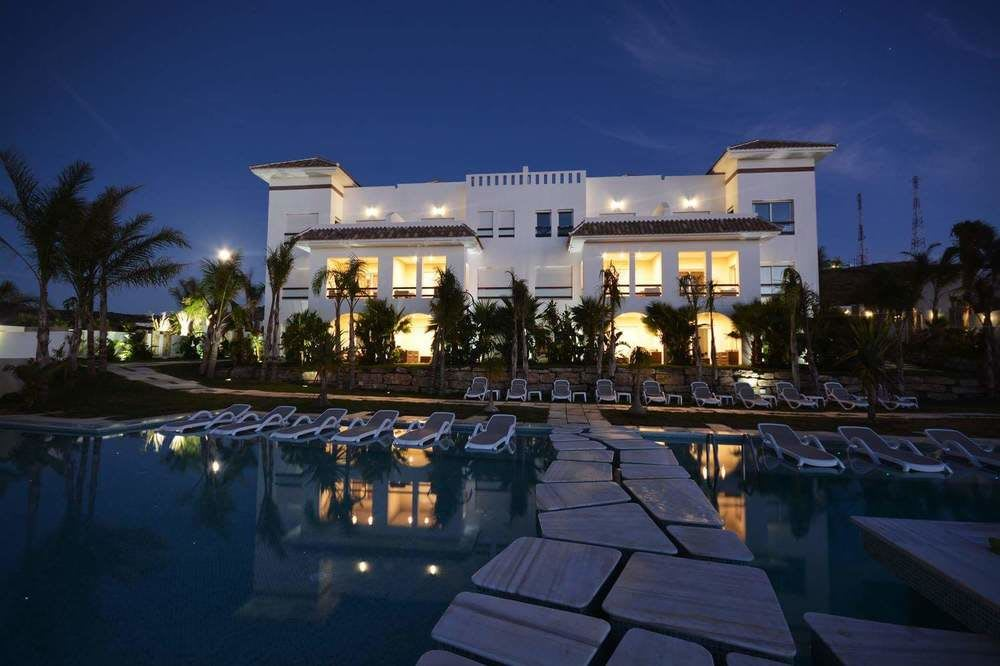
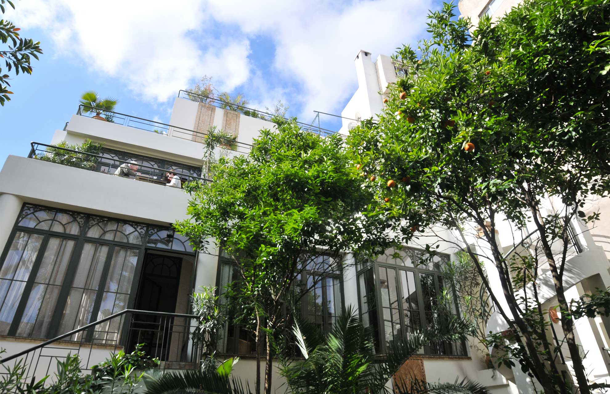

Tangier est l'une des plus belles villes du Maroc qui contient de nombreux hôtels de luxe, qui offrent à tous les clients un séjour idéal en termes de confort et de plaisir.
L'un des meilleurs hôtels de Tangier qui propose des hébergements confortables avec un bureau, dont certains disposent d'une terrasse et d'un coin salon. Il dispose d'installations VIP, d'un spa et d'installations de massage, d'une connexion Internet gratuite et d'un bureau d'excursions. Il se trouve à 450 mètres du musée de la Kasbah, à 2,9 km du centre commercial Tangier City et à 14,5 km de l'aéroport Tangier Ibn Battuta.